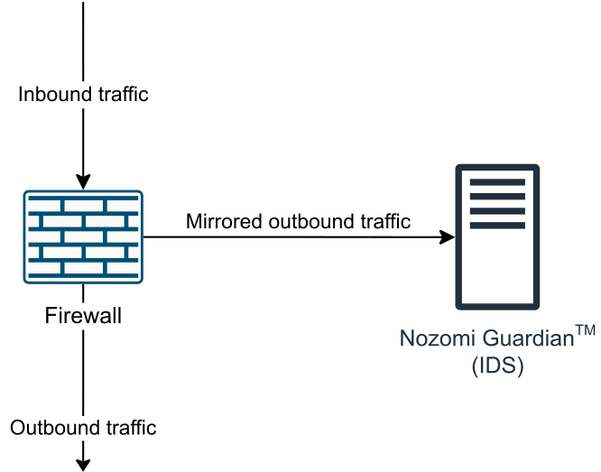

Network segmentation divides your network into multiple zones. Each zone has a different set of connectivity requirements and traffic patterns.
Segmentation is obtained by placing firewalls at strategic locations.
Intrusion detection and prevention systems are deployed at key locations and alerts are reported to a monitoring center.
To mitigate the risk of storm events in the system that would impact on the control network, apply a rate limit of 1000 frames per second, or 12 Mbps to the traffic passing into the control network.
Many organizations require that people can remotely connect to the EcoStruxure Automation Expert components as if they were still located physically at site, with the highest levels of security considered. Whether for maintenance, support, or even aspects of system operation, fast, reliable and secure connections are required wherever your key experts are located.
Typical VPN solutions are complex to setup and maintain and provide limited or no access to OT systems. Hardware systems don’t provide the flexibility and access required to the resources needed to keep your operation running smoothly.
The Schneider Electric Cybersecurity Services team can help to provide you a solution enabling your key personnel to remotely access their OT assets and applications while away from site in a secure and safe manner. This connectivity enables them to monitor their assets, and, subject to appropriate authorization, permit them to control and carry out maintenance tasks on the asset / applications. If needed, this functionality can be extended to third party vendors as well. Our solution sits within the existing client infrastructure and uses existing hardware, to the extent possible, within the client’s location.
In a perimeter or external firewall, a special isolated zone, referred to as a demilitarized zone (DMZ), is commonly created..
The DMZ is a small network inserted as a neutral zone between a company’s private network and the outside public network The DMZ sub-zone contains public facing web or FTP servers. The DMZ gives greater flexibility for the firewall rule set to further control traffic that flows through it.
It is common for external firewalls to have additional DMZs for other applications. The firewall will then provide the ability to restrict what your trading partners can access on the company network. Therefore, you can extend these concepts to an internal firewall that is used to isolate the Control System’s Control Network.
A typical example is an installation in which the firewall is located between the plant network and the control network zones. A DMZ is created that contains the data collection and reporting servers. These servers will be accessible from the enterprise network. Only these servers will be allowed to communicate with the process control network.
The security level for the DMZ is higher than the enterprise zone but less than the Control zone, see the topic Control System Architecture. The function of this zone is to eliminate or reduce all direct communication between the Control zone and the Enterprise zone. Devices should be located in the DMZ that function as a bridge or buffer between devices in the Enterprise zone and Control zone. The Networks are segmented through the use of a firewall that has the ability to control what passes through the device.
You can use these filtering strategies in the DMZ:
The base configuration of the barrier device should be set to deny all communication by default and only allow communication by exception to meet a critical business need. This applies to both intermittent and interactive user communication, and task-to-task communication between devices in these two zones.
Ports and servers frequently used as attack vectors should not be opened through the barrier device. If this service is required due to business justifications, additional countermeasures such as blocking inbound scripts and the use of an http proxy server might help reduce the risk of opening high risk ports and servers.
Minimize the number of ports and services open through the barrier device. Avoid communication technologies that require a large number of open ports.
The IT and Process Control networks have a basic requirement that Intrusion Detection System (IDS) and Intrusion Prevention Systems (IPS) are implemented to help prevent unwanted or malicious traffic.
An IPS should be part of the overall enterprise and control network architectures to help protect critical networks against the complete spectrum of threats and vulnerabilities. Nozomi Guardian provided by CAP is recommended for this architecture.
IDS have been a critical piece of security infrastructure implemented whenever critical business processes such as Control Systems are connected to TCP/IP-based local and wide area networks. IDS are able to detect and block network activity such as hacking attempts, virus and worm attacks, and other potentially threatening traffic capable of wreaking havoc on the control system.
In the process control environment, preventing intrusion in real-time is just as important as detecting it. IPS incorporate all IDS functionality, and then take intrusion detection a step further with its ability to block an attack as it is happening, thereby helping to prevent harm to your network or control system. IPS are installed in-line on your network, thus all network traffic must traverse it.
We recommend Network-based IDS as part of CAP:
|
Network-based IPS |
Intrusion prevention devices that monitor your network for attacks and are independent from the control system. |
|
Host-based IPS |
Intrusion prevention devices that are installed on each Computer System on the network. These devices make a baseline of the operating system and applications on your system and block any anomalous traffic coming from your network that could potentially interrupt the recorded baseline. |
Like firewalls, IPS are also chosen by their network bandwidth capability. These aspects should be taken into consideration when choosing an IPS:
Number of physical connections
Speed of the physical connections (throughput)
Speed of the combined physical connections (aggregate throughput)
Special IP network constraints such as VLAN use
CAP offers a network-based IDS called Nozomi Guardian™.
Nozomi Guardian™ is a platform that protects OT networks from cyber attacks and operational disruptions by providing visibility and rapid detection of threats, anomalies and process risks using a passive approach.

Nozomi Guardian™ is an instance of a sensor that can be deployed in strategic areas of the plant architecture.
Here is the most common way to set up a Nozomi Guardian™:
Choose where to deploy Nozomi Guardian™. The sensor must be deployed just after a firewall dividing two different subnets. For instance, between the Enterprise Zone (Level 4) and DMZ (Level 3.5).
Configure the firewall in the chosen zone to mirror its outbound interface to Nozomi Guardian™ so the firewall connect to Nozomi Guardian™ and have access to all traffic.
The network interface used by Nozomi Guardian™ must be configured in Promiscuous Mode.
Direct wireless access is not supported on EcoStruxure Automation Expert. Thus, you cannot deploy and control devices through wireless access.
The only exception is the remote access service using CAP, as detailed in the Remote Desktop Service topic. This service is supported through internet connection using Wi-Fi or any other wireless communication.
In an IEC 62443-3-3 certified system Wi-Fi should not be used.